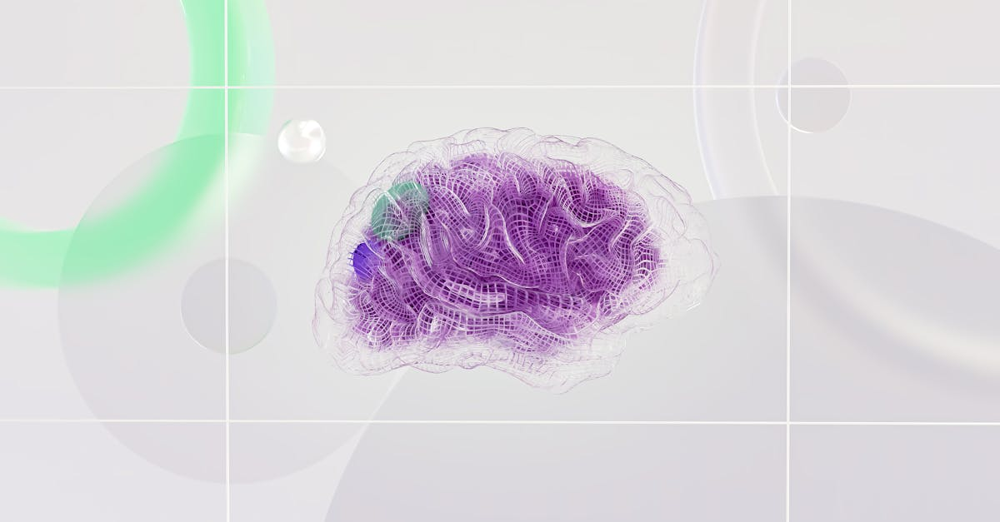

L'Intelligence Artificielle à la Conquête des Marchés Financiers
Dans un monde où la rapidité de l'information et la précision des analyses sont primordiales, l'intelligence artificielle (IA) s'impose comme une force transformatrice majeure, particulièrement dans le domaine de l'investissement. Récemment, Bloomberg, acteur incontournable de l'information financière, a mis en lumière cette tendance de manière originale. Le co-animateur de “Bloomberg This Weekend”, Ed Ludlow, a participé à un nouveau jeu interactif appelé “Pointed!”, aux côtés de David Gura, Christina Ruffini et Lisa Mateo. Ce jeu, qui invite les participants à parier sur leurs connaissances, est disponible chaque semaine sur Bloomberg.com. Au-delà du divertissement, ce format novateur souligne une réalité profonde : l'intégration croissante de l'IA dans les stratégies d'épargne et d'investissement. L'objectif est simple : tester et, par extension, démontrer la pertinence des connaissances et des outils liés au monde financier moderne. Pour les épargnants et investisseurs individuels, cela résonne avec la nécessité d'adopter des approches plus sophistiquées pour optimiser leur patrimoine. L'IA ne se contente plus d'être un concept futuriste ; elle devient un outil tangible, capable d'analyser des volumes massifs de données, d'identifier des tendances subtiles et de proposer des stratégies d'allocation d'actifs personnalisées. L'ère de l'épargne intelligente, pilotée par des algorithmes performants, est déjà là. Ce jeu, bien que ludique, sert de catalyseur pour une prise de conscience : comprendre et maîtriser les outils basés sur l'IA n'est plus une option, mais une nécessité pour quiconque souhaite naviguer avec succès dans les complexités des marchés financiers du 21ème siècle. La capacité de l'IA à traiter l'information à une vitesse surhumaine et à anticiper les mouvements du marché offre un avantage concurrentiel indéniable, que ce soit pour les grandes institutions ou pour l'investisseur particulier.
👉 À lire : IA et Finance : Le Futur de l'Épargne Expliqué

Bloomberg et l'IA : Un Engagement Visible
L'initiative de Bloomberg avec le quiz “Pointed!” n'est pas un simple coup de communication. Elle reflète une stratégie plus large visant à intégrer l'IA au cœur de ses propres opérations et à éduquer son audience sur son potentiel. En proposant un format interactif, la plateforme de référence pour les professionnels de la finance cherche à démystifier l'IA et à la rendre accessible. Le jeu, qui demande aux participants de “miser des points” et de “répondre judicieusement”, simule, à petite échelle, les mécanismes de prise de décision dans l'investissement. Les enjeux sont réels : une mauvaise réponse peut signifier une perte de capital virtuel, tout comme dans le monde réel. Cette approche ludique permet de souligner l'importance de l'information fiable, de l'analyse rigoureuse et de la gestion des risques – des piliers fondamentaux de l'investissement, désormais amplifiés par les capacités de l'IA. Pour les experts de Bloomberg, comme Ed Ludlow, il s'agit de naviguer dans un paysage médiatique et financier en mutation rapide, où l'IA joue un rôle de plus en plus prépondérant. Les discussions sur les “Business Leaders” et les “Investigations” menées par Bloomberg intègrent désormais systématiquement la dimension technologique et algorithmique. Il ne s'agit plus seulement de comprendre les entreprises, mais aussi les technologies qui les propulsent et les transforment. En proposant ce quiz hebdomadaire, Bloomberg ne fait pas que divertir ; il éduque subtilement son public sur l'importance de l'IA dans la compréhension des marchés et des stratégies d'investissement. Cela encourage une réflexion sur la manière dont les épargnants peuvent eux-mêmes tirer parti de ces avancées pour optimiser leurs propres portefeuilles, en envisageant des solutions d'automatisation et de conseil basées sur l'IA.
👉 À lire : Slash : La startup IA qui défie les géants de la finance
L'IA : Un Levier Puissant pour l'Épargne Personnelle
Au-delà des grands médias et des institutions financières, l'impact de l'IA se fait sentir directement dans la vie des épargnants. Les plateformes d'investissement automatisé, souvent appelées “robo-advisors”, exploitent l'intelligence artificielle pour offrir des services de gestion de portefeuille personnalisés à moindre coût. Ces agents IA sont conçus pour comprendre les objectifs financiers de l'utilisateur, son profil de risque, et son horizon de placement, afin de construire et d'ajuster dynamiquement un portefeuille d'investissements. Leur principal avantage réside dans leur capacité à opérer 24h/24 et 7j/7, sans intervention humaine, analysant en continu les données du marché pour saisir les meilleures opportunités et rééquilibrer le portefeuille en fonction des fluctuations. Contrairement à une gestion humaine qui peut être sujette à des biais émotionnels ou à des limitations de temps, l'IA offre une approche rationnelle et systématique. Pensez à un assistant financier infatigable, toujours à l'affût des meilleures stratégies pour faire fructifier votre argent. Pour l'épargnant qui jongle entre une vie professionnelle chargée et le désir de faire travailler son capital, ces outils représentent une solution idéale. Ils démocratisent l'accès à une gestion de patrimoine sophistiquée, autrefois réservée aux clients fortunés. Le quiz de Bloomberg, en mettant l'accent sur la connaissance et la prise de décision éclairée, souligne indirectement la valeur de ces outils qui automatisent et optimisent le processus d'investissement. Ils permettent de libérer l'épargnant des tâches fastidieuses et des décisions potentiellement coûteuses, tout en améliorant la performance potentielle du portefeuille grâce à une analyse de données poussée.

Les Mécanismes Clés de l'Automatisation Financière par IA
Comment fonctionnent concrètement ces agents IA qui optimisent notre épargne ? Leur puissance réside dans l'exploitation de plusieurs technologies clés. Premièrement, l'apprentissage automatique (Machine Learning) permet à ces systèmes d'apprendre à partir de vastes ensembles de données historiques et en temps réel. Ils identifient des corrélations, des tendances et des schémas que l'œil humain pourrait manquer. Deuxièmement, le traitement du langage naturel (NLP) leur permet d'analyser les actualités financières, les rapports d'analystes et même le sentiment général sur les réseaux sociaux pour évaluer l'impact potentiel sur les marchés. Troisièmement, les algorithmes d'optimisation sont utilisés pour construire des portefeuilles diversifiés qui maximisent le rendement attendu pour un niveau de risque donné, ou minimisent le risque pour un rendement cible. Ces systèmes sont capables de réaliser des analyses de scénarios complexes et de s'adapter rapidement aux nouvelles informations. Imaginez un expert financier qui lit des milliers de rapports par jour, comprend les implications de chaque nouvelle, et ajuste votre portefeuille en temps réel pour vous protéger des risques et saisir les gains. C'est ce que l'IA rend possible. Le quiz de Bloomberg, en demandant des réponses avisées, met en exergue la nécessité d'une compréhension approfondie, que ces outils IA peuvent fournir. Ils ne remplacent pas l'intelligence humaine, mais l'augmentent considérablement, en fournissant des insights basés sur des données objectives et en exécutant des stratégies avec une discipline sans faille. Pour l'épargnant, cela se traduit par une gestion plus efficace et potentiellement plus rentable de son capital.
Défis et Opportunités : Naviguer dans l'Ère de l'IA Financière
Si l'attrait de l'optimisation par l'IA est indéniable, il est crucial d'aborder cette révolution technologique avec discernement. Les défis sont multiples. La complexité des algorithmes peut parfois rendre difficile la compréhension des décisions prises par l'IA, soulevant des questions de transparence. De plus, bien que l'IA réduise les biais émotionnels, elle peut hériter des biais présents dans les données d'entraînement, nécessitant une vigilance constante pour éviter des discriminations involontaires. La sécurité des données est également une préoccupation majeure : confier ses informations financières à des systèmes automatisés demande une confiance absolue dans leur robustesse face aux cybermenaces. Cependant, les opportunités surpassent largement ces défis. L'IA promet une démocratisation sans précédent de l'accès aux services financiers de haute qualité. Les coûts de gestion sont réduits, rendant l'investissement accessible à un public plus large. L'automatisation libère du temps et de l'énergie mentale, permettant aux individus de se concentrer sur d'autres aspects de leur vie. Considérez cela comme une extension de votre propre capacité d'analyse et de décision, pilotée par une technologie de pointe. Le jeu de Bloomberg, en soulignant l'importance de la connaissance, invite à s'informer sur ces outils. Comprendre comment l'IA peut analyser les marchés, identifier les risques et optimiser les rendements est la première étape pour en tirer parti. L'avenir de l'épargne ne réside pas dans le remplacement de l'humain, mais dans une synergie intelligente entre l'homme et la machine, où l'IA agit comme un puissant catalyseur pour une gestion financière plus efficace et plus accessible.

L'Importance de l'Information et de la Connaissance
Le format interactif choisi par Bloomberg, avec son quiz “Pointed!”, met en exergue un élément fondamental souvent négligé dans le débat sur l'automatisation : la connaissance. Même avec les outils d'IA les plus sophistiqués, la compréhension des principes financiers, des objectifs personnels et des risques encourus reste essentielle. L'IA est un outil puissant, mais elle nécessite une direction humaine éclairée. Le jeu invite à tester ses connaissances, à “parier” sur ses réponses, ce qui est une métaphore directe des décisions d'investissement. Une bonne décision repose sur une information fiable et une analyse pertinente, des domaines où l'IA excelle à traiter de grands volumes de données. Cependant, c'est l'utilisateur qui doit définir le cadre, poser les bonnes questions et interpréter les résultats dans le contexte de ses propres aspirations financières. Se fier aveuglément à un algorithme sans comprendre ce qu'il fait, c'est un peu comme naviguer en haute mer sans carte ni boussole, même avec le meilleur pilote automatique du monde. Pour l'épargnant qui envisage des solutions d'optimisation par IA, il est donc crucial de s'informer. Comprendre comment l'IA analyse les marchés, quels types de données elle utilise, et comment elle prend ses décisions permet d'établir une relation de confiance et d'assurer que l'outil sert réellement les objectifs fixés. L'initiative de Bloomberg rappelle que, dans le monde de la finance, la technologie et la connaissance doivent aller de pair pour construire un avenir financier solide et prospère. L'épargne intelligente n'est pas seulement une affaire d'algorithmes, mais aussi d'éducation et de compréhension.
Préparer son Avenir Financier avec l'IA
Alors que l'intelligence artificielle continue de remodeler le paysage financier, les épargnants et investisseurs ont une opportunité unique de repenser leur approche de la gestion de patrimoine. L'initiative de Bloomberg, à travers son quiz interactif, sert de rappel que l'information et la compréhension sont les clés du succès, même dans un environnement de plus en plus automatisé. Les agents IA, capables d'optimiser l'épargne et les placements 24h/24, offrent une solution puissante pour ceux qui cherchent à maximiser leurs rendements tout en minimisant les efforts et les risques liés aux décisions émotionnelles. Ces outils permettent une diversification accrue, une réactivité face aux marchés et une gestion personnalisée, le tout à une échelle et une efficacité inégalées. Il ne s'agit pas de remplacer l'humain, mais de l'augmenter, en lui fournissant des capacités d'analyse et d'exécution surhumaines. Pour l'épargnant moderne, cela signifie une porte d'entrée simplifiée vers une gestion financière de pointe. L'adoption de ces technologies, combinée à une compréhension claire de leurs mécanismes et de leurs limites, est la voie vers une épargne véritablement intelligente et un avenir financier serein. En fin de compte, l'IA n'est pas une baguette magique, mais un levier exceptionnel. La véritable optimisation naît de la combinaison de cette puissance technologique avec une stratégie humaine bien définie, une curiosité pour l'apprentissage continu et une confiance éclairée dans les outils qui nous aident à construire la richesse de demain.
Conclusion
L'actualité de Bloomberg et son jeu “Pointed!” illustrent parfaitement la convergence actuelle entre la technologie de pointe et le monde de la finance. L'intelligence artificielle n'est plus un concept lointain, mais une réalité tangible qui transforme la manière dont nous abordons l'investissement et l'épargne. Pour l'épargnant individuel, cela se traduit par l'émergence d'outils d'optimisation puissants, capables de gérer les portefeuilles avec une efficacité et une disponibilité sans précédent. Ces agents IA offrent une solution prometteuse pour naviguer dans la complexité des marchés, réduire les coûts et potentiellement améliorer les rendements. L'enjeu pour chacun est désormais de comprendre comment ces technologies fonctionnent, quels bénéfices elles apportent et comment les intégrer judicieusement dans sa propre stratégie financière. L'épargne intelligente de demain sera sans doute celle qui saura tirer le meilleur parti de la synergie entre l'intelligence humaine et l'intelligence artificielle. En restant informé et en adoptant une approche proactive, chacun peut faire de l'IA un allié précieux dans la construction de son patrimoine et la réalisation de ses objectifs financiers.